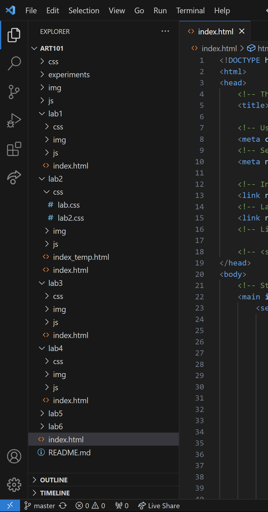
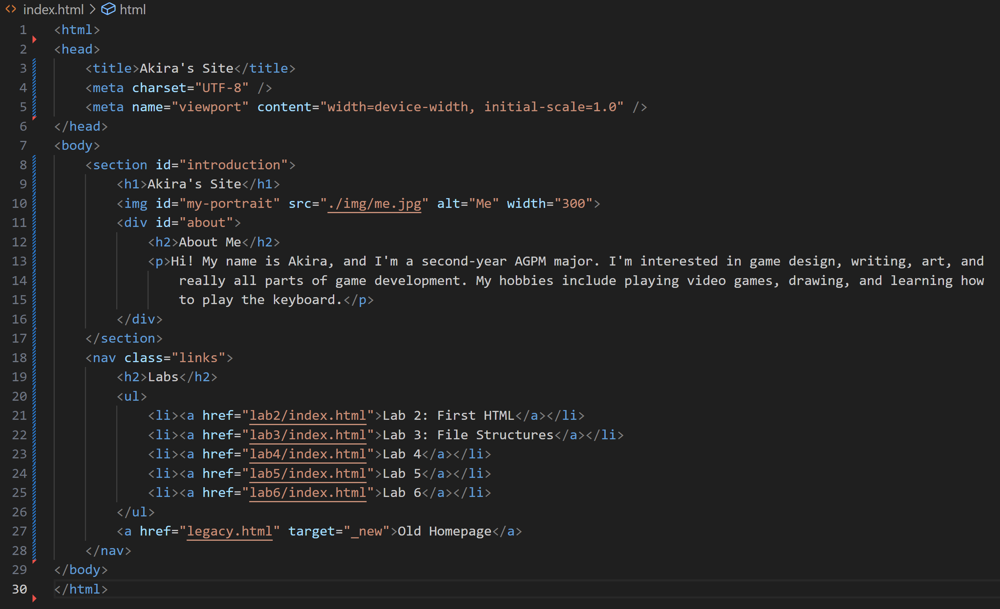
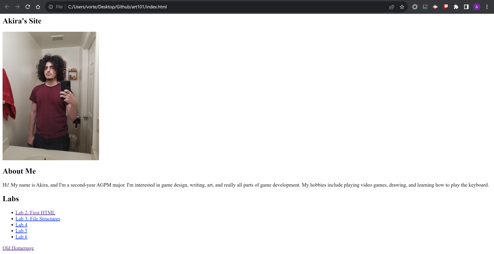
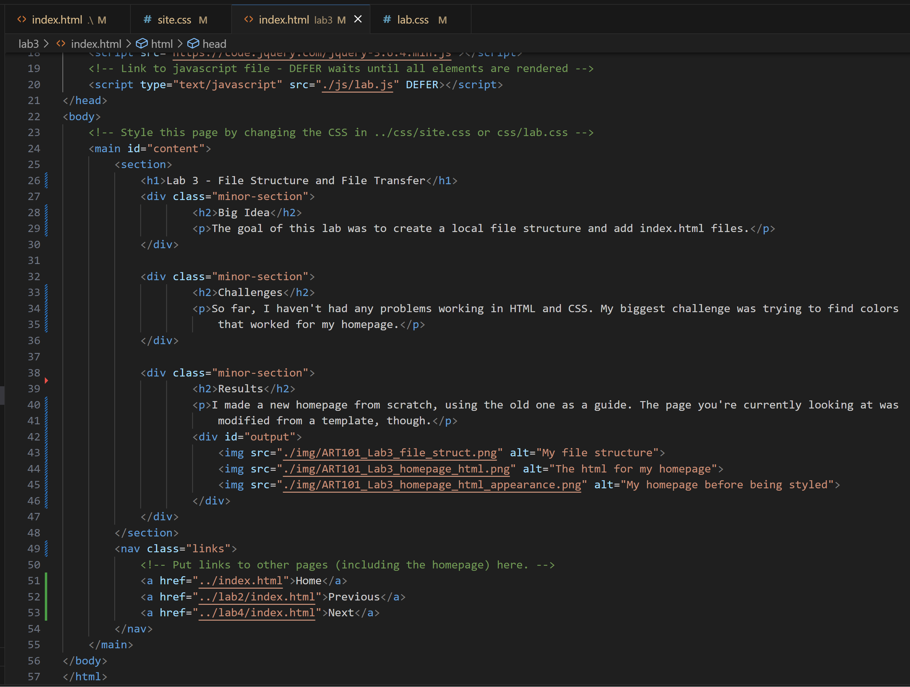
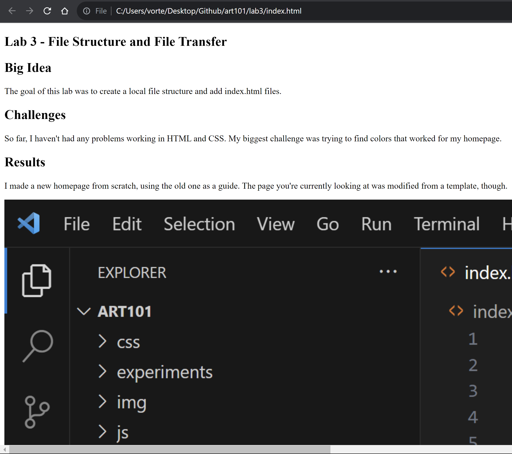

Lab 3 - File Structure and File Transfer
Big Idea
The goal of this lab was to create a local file structure and add index.html files.
Challenges
So far, I haven't had any problems working in HTML and CSS. My biggest challenge was trying to find colors that worked for my homepage.
Results
I made a new homepage from scratch, using the old one as a guide. The page you're currently looking at was modified from a template, though.




